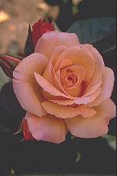
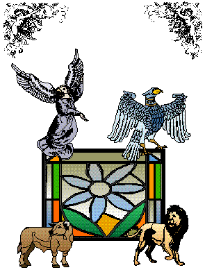

| 9. Questions on Subject 9, or Instruments
 This ninth or last subject, called instrumental or artificial, is to be understood in two ways: namely with regard to GOD and with regard to creatures. Regarding GOD, the question is to be considered in an orderly process by following a certain order, though not an absolutely exclusive one, with the help of words such as the following ... From all Eternity, GOD wanted this creature, for instance this rose, and his intellect as well as his will wanted and understood this. And thus it was possible for such a desired, understood, good, great, durable, virtuous, true and glorious thing to exist. And it is possible for such a desired object to be acquired through some means; although the attributes of GOD are all absolute and in no need of any instrument or means to their end. But for an orderly means to exist, they need a willingly created instrument, such as the heavens, or some other natural agent, as in this example where we see that the divine will wants to produce a rose with a rosebush, and other things like this. And GOD does all these things, by understanding them with his intellect, by empowering them with his power and doing good with his goodness, and likewise with the other attributes that GOD has. But after all, GOD acts as a universal agent and the rosebush acts in a secondary way as a particular agent. And so GOD acts in a miraculous and supernatural way in his absolute capacity, but in an orderly way with nature. Creatures, on the other hand always act with some actual instrument, as in the following example. A man sees a rose with his eyes. And thus the sense of sight is his instrument, or also the imagination when the eyes are closed, and likewise for the other powers and we say that this is the way all things lower than GOD are naturally understood. The same thing applies to the virtues and vices and to the mechanical arts as well, since we can say about a mechanic or a surveyor considering lines in an abstract way, or even about a mathematician considering numbers, that basically the senses and the imagination must act as their instruments in some way or other. Here we see that the artificial process used by creatures is of two kinds: namely intellectual and sensual. The intellectual kind is performed within the intellect, as when dealing with the virtues and vices in moral science, or also in the seven liberal arts. The sensual kind of artificial process comes down to the senses by passing through the imagination, and originates first of all in the intellect. In this way, for instance, agriculture and its other attendant artificial processes are all derived from astronomy, geometry and arithmetic, from which the processes of spinning, building and weaving are also derived with their attendant arts; and from the art and science of music, the organ and all kinds of instruments proceed. Regarding this subject, however, we are not putting any questions in
this book, because such questions, or others resembling them can be solved
in the very same way as the preceding ones, which we leave for the practicing
artist to solve. THIS ART HAS BEEN COMPLETED BY RAYMOND LULL IN MAIORCA.  THANKS BE TO GOD. To Contents of Ars Infusa |